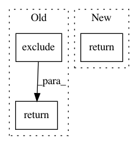

1542abe1e397f328be4532a60d542021aa43cc46,jarbas/chamber_of_deputies/twitter.py,Twitter,queryset,#Twitter#,33
Before Change
@property
def queryset(self):
last_term = Reimbursement.objects \
.exclude(term=None) \
.distinct("term") \
.order_by("-term") \
.values_list("term", flat=True) \
.first()
kwargs = {
"issue_date__year__gte": last_term,
// "term": last_term, // Removed until this issue is fixed:
// https:// github.com/labhackercd/dados-abertos/issues/215
"suspicions__meal_price_outlier": True,
"tweet": None,
}
if self.mention:
kwargs["congressperson_id__in"] = Subquery(
SocialMedia.objects.exclude(twitter_profile="")
.distinct("congressperson_id")
.values_list("congressperson_id", flat=True)
)
return Reimbursement.objects \
.filter(**kwargs) \
.exclude(congressperson_id=None)
@property
def reimbursement(self):
if self._reimbursement:
After Change
return queryset
top_quartile = count // 4 or 1
return queryset[:top_quartile]
@property
def reimbursement(self):
if self._reimbursement:
In pattern: SUPERPATTERN
Frequency: 3
Non-data size: 3
Instances
Project Name: okfn-brasil/serenata-de-amor
Commit Name: 1542abe1e397f328be4532a60d542021aa43cc46
Time: 2019-02-27
Author: cuducos@users.noreply.github.com
File Name: jarbas/chamber_of_deputies/twitter.py
Class Name: Twitter
Method Name: queryset
Project Name: okfn-brasil/serenata-de-amor
Commit Name: 21ffe0e3532b3bd21b8995b92d7954f0bab48ca3
Time: 2018-12-20
Author: cuducos@users.noreply.github.com
File Name: jarbas/chamber_of_deputies/querysets.py
Class Name: ReimbursementQuerySet
Method Name: suspicions
Project Name: MTG/freesound
Commit Name: f96a9c451ebc69e761baa633a33472e974a014d5
Time: 2019-07-24
Author: frederic.font@upf.edu
File Name: accounts/models.py
Class Name: Profile
Method Name: get_enabled_email_types